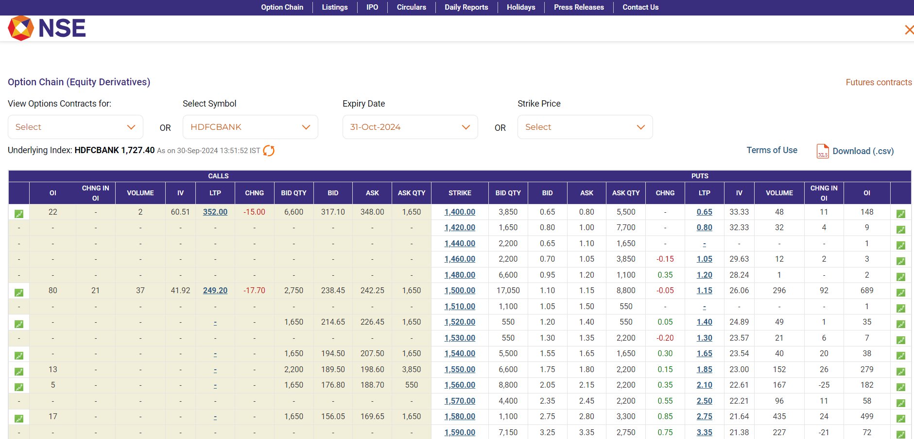
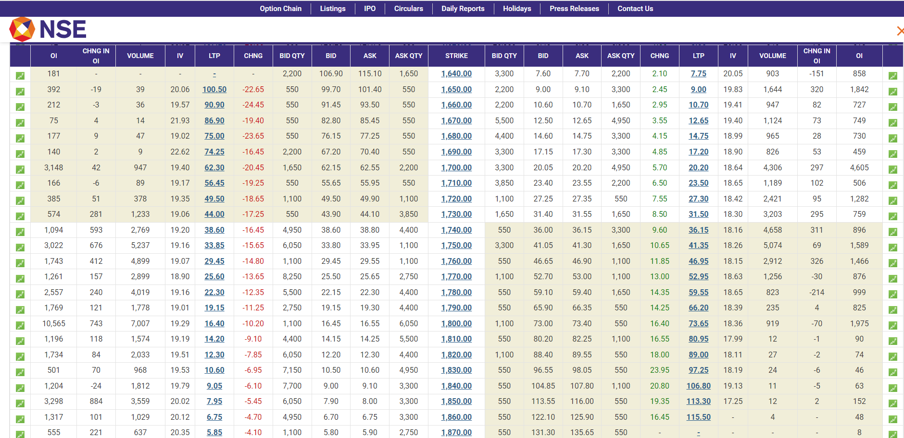
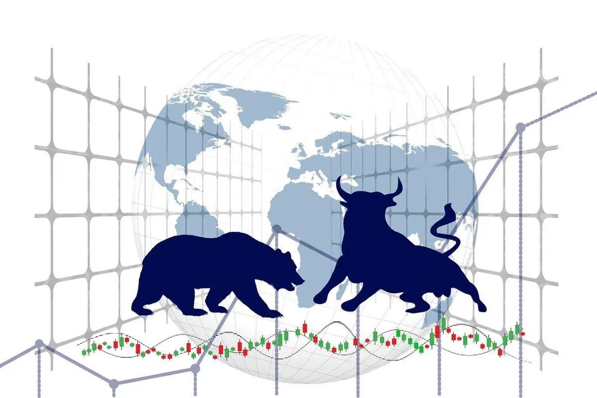
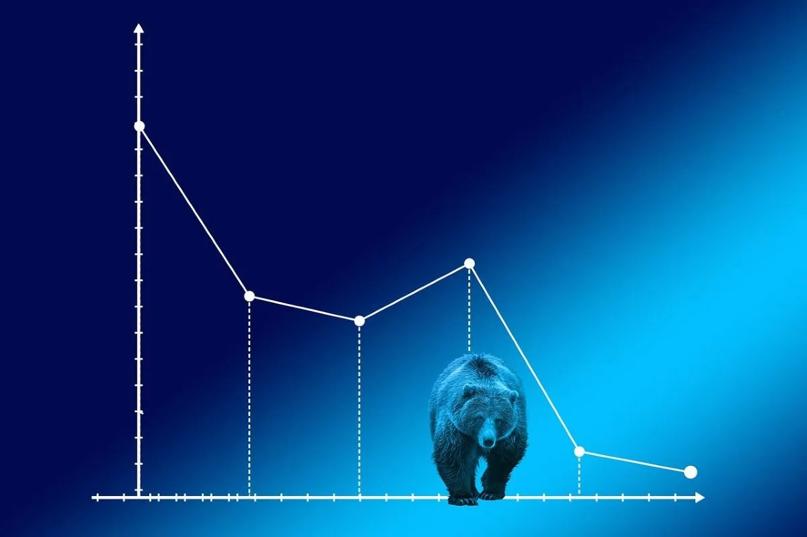
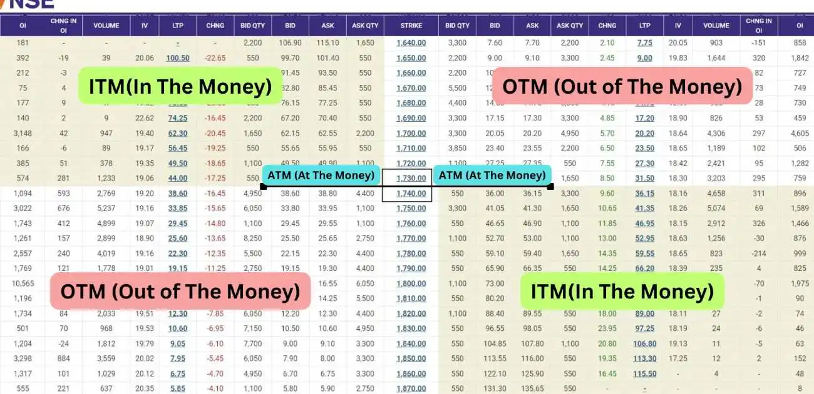

Table of Content
- 1. What is the NSE Option Chain?
- 2. What Are Options?
- i) Call Options
- ii) Put Options
- 3. Structure of the Option Chain
- i) Strike Price
- ii) Expiry Date
- iii) Call Options Data
- 4. Put Options Data
- 5. Premium
- 6. How to Read the Option Chain
- 7. Importance of Open Interest and Volume
- 8. Implied Volatility (IV)
- 9. Options Trading Strategies
- 10. ATM, ITM and OTM
- 11. Risks Involved
- Conclusion
- Frequently Asked Questions
NSE option chain analysis - step by step
The NSE option chain shows all the available options for stocks and index, including their prices , expiry dates, OI etc. Traders use it to see which options are popular and best, how much they cost. NSE Option Chain analysis to helps in making decisions about buying or selling options based on market trends. By NSE Option Chain analysis data, traders can better understand profits and risks.
What is the NSE Option Chain?

The NSE (National Stock Exchange of India) option chain is a list of all the options available for a particular stock or index. An option chain is a list of table that all available options for a particular stock or index.
It includes both call options and put options, showing various details like the strike price, expiry date and premiums (the price you pay for the option).
What Are Options?
Before learning deeper, let’s understand the two main types of options:-
1. Call Options:-
These give you the right to buy a stock at a certain price (called the strike price) before the expiration date. You buy a call option if you think the stock or index will go up and if you think stock or index go down then sell call option.
2. Put Options:-
You buy a put option if you think the stock price will go down and if you think stock or index go up then sell put option.
Structure of the Option Chain
When you look at the nse option chain data analysis, you will naturally see a table that includes the following columns:-
1. Strike Price:-
This is the price at which you can buy or sell the stock.
2. Expiry Date:-
This is the date by which you must important your option. Options have various expiry dates. This data your option expires.
3. Call Options Data:-
This part shows details about the call options:-
i) Open Interest (OI)
This tells you how many contracts are currently active. A high OI indicates strong interest.
ii) Volume
Volume shows in option chain how many contracts have been buy or sell that day.
iii) Bid Price
The bid price in an option chain is the price at which buyers want to buy at that price.
iv) Ask Price
Ask price is the lowest price a seller is willing to accept for tread.
v) Last Traded Price (LTP)
Ltp is the last price at which the option was traded.
vi) Implied Volatility (IV)
This indicates how much the market expects the stock price to move in the future. Higher IV usually means higher option prices.
Put Options Data:-
This part is similar to the call options data but focuses on put options.
Premium:-
TOption buy price is made up of two types of values, first is time value and second is intrinsic value. This time value is called premium. It varies based on factors like how close the option is to the current market price of the asset and how much time is left until expiration.
How to Read the Option Chain

Let’s a simple example to understand how to read an option chain. Example you are looking at the option chain for a stock like HDFC BANK.
i) Select a Strike Price
First, you would look at the strike prices listed. Let’s say you see a strike price of 1740
ii) Check Expiry Dates
You might see options that expire in one week, one month or even three months. Choose the expiry date you are interested in.
iii) NSE Option Chain analysis Call Options data
Look at the call options data for the 1740 strike price.
1) Check the Open Interest
If its high, many traders are interested in that option. 1740 strike price OI is 1094.
2) Check the Volume
A high volume indicates that many people are trading it right now.
3) Look at the Bid and Ask Prices
This tells you how much people are willing to pay or receive for that option.
iv) Analyse Put Options data
Repeat the same process for the put options at the same strike price. This will help you understand the market sentiment.

Importance of Open Interest and Volume by NSE Option Chain analysis
i) Open Interest
A high open interest means that many traders have buying or selling that option. This can indicate the strength of a particular price level. If open interest is increasing, it might mean that the trend up or down is likely to continue.
ii) Volume
Volume is important for understanding market activity. If you see a sudden increase in volume for a particular option, it could signal that something significant is happening, like a news event or earnings announcement or treaders is interesting this particular Strike price.
Implied Volatility (IV)
Implied Volatility is important because it tells you how much the market expects the stock to move. High IV can make options more expensive, while low IV can make them cheaper.
If you are considering buying options, you want to buy when IV is low and sell when it’s high. This strategy is based on the idea that you can take advantage of changes in market expectations.

Options Trading Strategies
Now that you understand the basics, here are a few simple strategies:-
1. Buying Calls
If you believe a stock will go up, you buy call options. If the stock growths above the strike price.
2. Buying Puts
If you think a stock will go down, you buy put options. If you think a stock may go down from this point, you can buy a put option
3. Selling Options
Experienced traders sometimes sell options to earn premium income. However, this can be risky because your potential losses can be unlimited.
4. Spreads
This involves buying and selling options at different strike prices or expiration dates. It’s a way to limit risk while still participating in potential gains.
ATM, ITM and OTM
i) ATM (At The Money)
This is when the option's strike price is the same as the current price of the stock or index.
ii) ITM (In The Money)
In The Money in the option has intrinsic value. For a buy option the strike price is below the current index or stock price.
iii) OTM (Out of The Money)
Out of The Money in the option has no intrinsic value that you pay. For a buy option the strike price is above the current stock or index price.

Risks Involved
Options trading can be risky. Here are some points to consider
i) Limited Time
Options expire and if the stock doesn’t move as you expected, you could lose your entire investment if you buy option.
ii) Market Volatility
Prices can change quickly and understanding market trends is critical.
iii) Complexity
Options strategies can become complicated and it is essential to have a good money of the method option treading.
Conclusion
In summary, NSE Option Chain analysis can give you valuable insights into market sentiment and potential price movements of stocks.
By understanding how to read the option chain, including strike prices, open interest, volume and implied volatility (IV), you can make more informed trading decisions to NSE Option Chain analysis. Also check our Disclaimer page.
Frequently Asked Questions (FAQs)
What are some common strategies using options?
Options trading offers a many of strategies for different market conditions and risk management. Here are some common strategies are i) Covered Call ii) Straddle iii) Protective Put iv) Strangle v) Bull Call Spread vi) Bear Put Spread vii) Iron Condor viii) Calendar Spread etc.
How to analyse option chain data in NSE?
To analyze option chain data on the NSE, first look at the strike prices to see available options. Check the bid and ask prices for current buying and selling interest, volume and open interest to understand market activity. High volume and open interest at certain strike prices can indicate strong support or resistance levels.
How to read IV in option chain?
To read implied volatility (IV) in an option chain, find the IV percentage listed for each option. A high IV means the market expects big price swings, while a low IV suggests smaller movements. Comparing IV across different options can help you identify which options are more or less expensive based on market expectations.